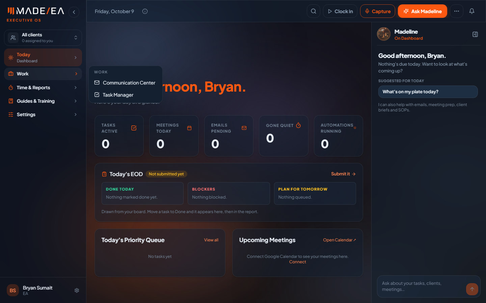
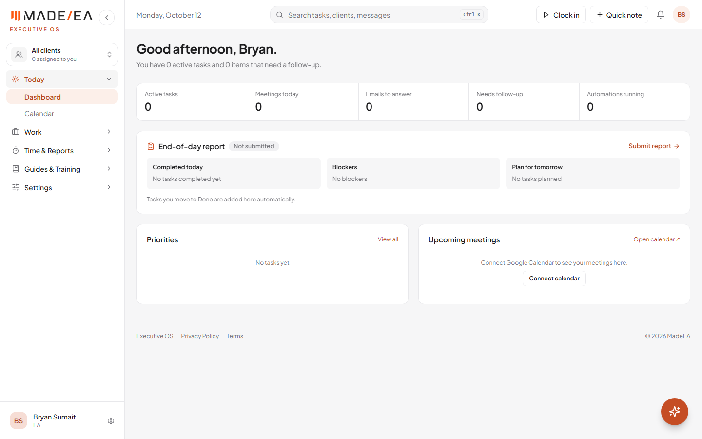
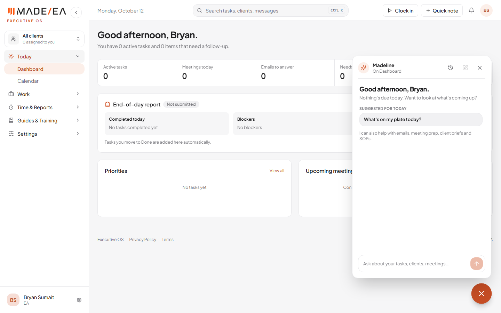
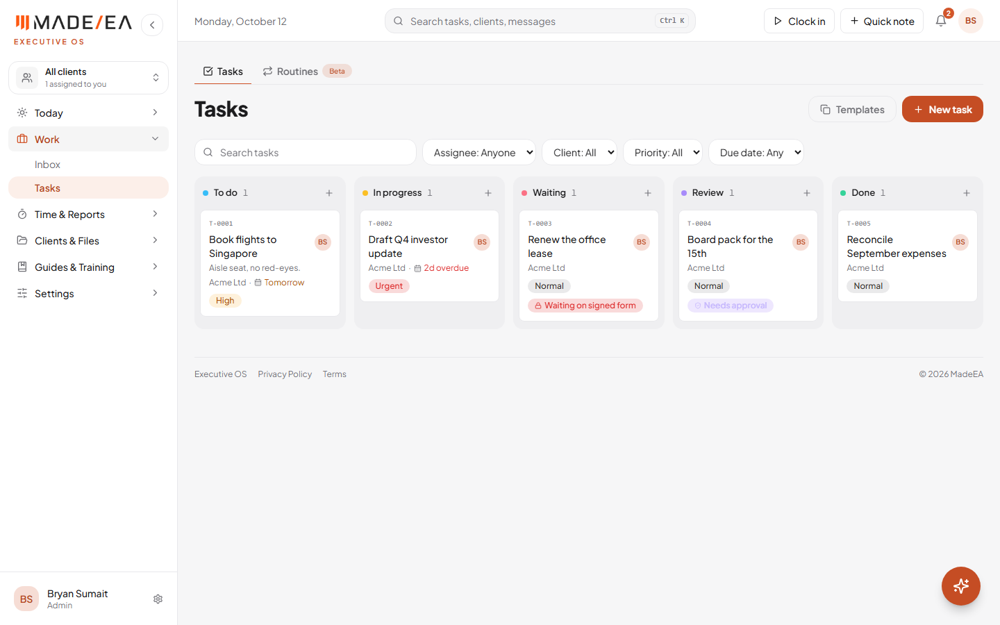
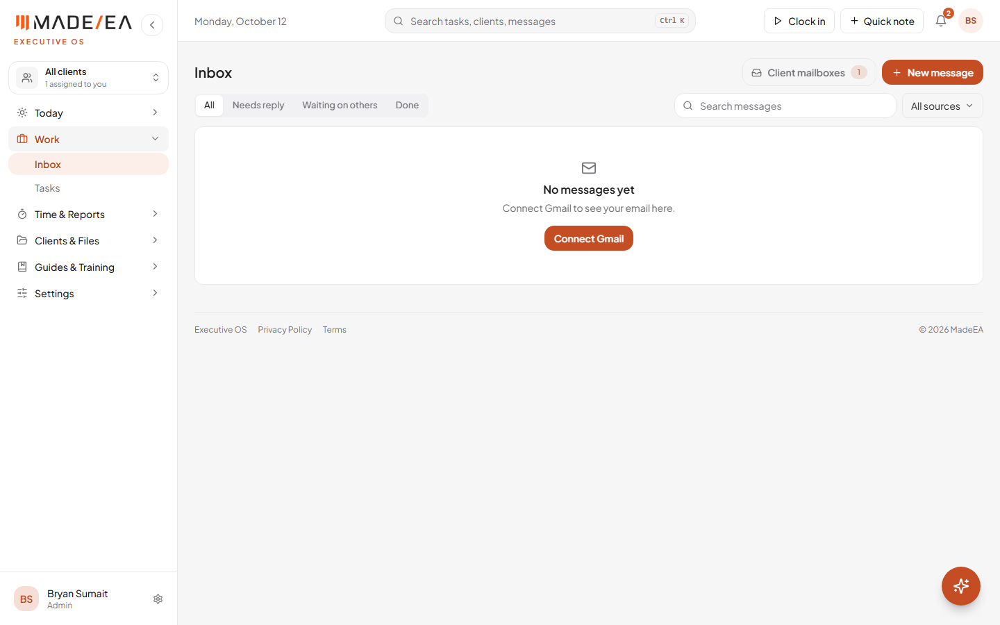
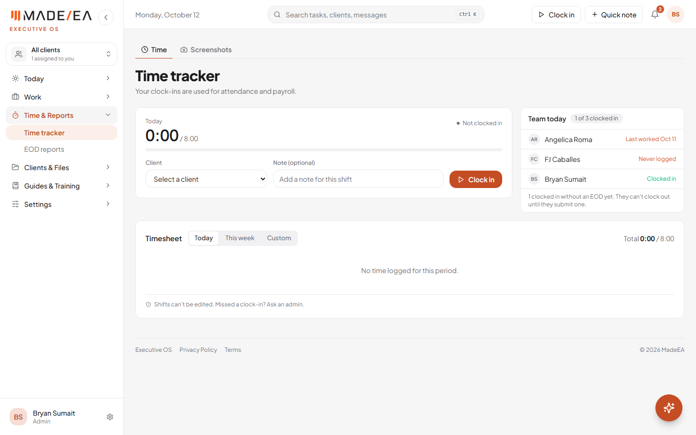
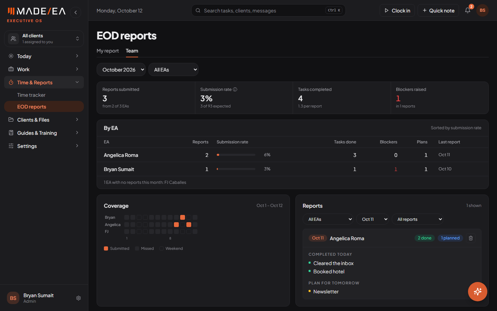
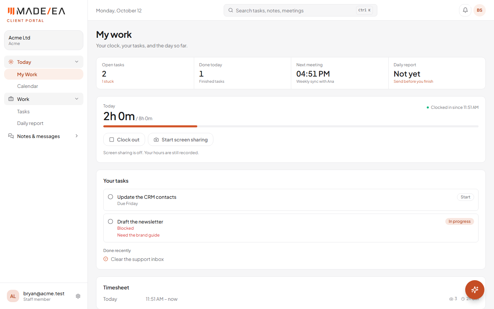
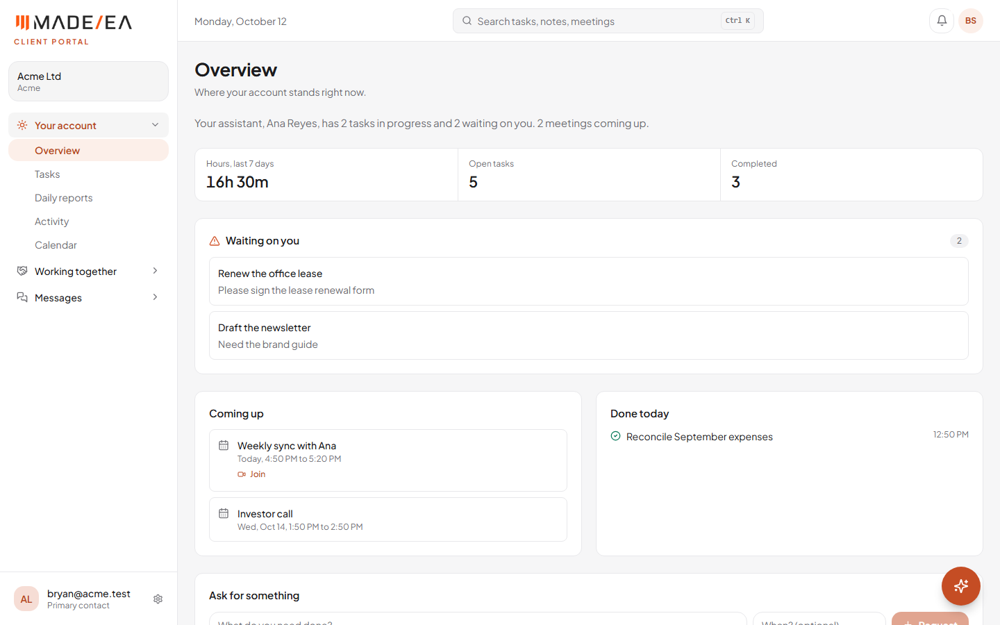

Every change in your 19-slide UI review deck is now live, for every kind of account: EAs, managers and admins in the Hub, your clients' staff, and your clients themselves in their portal. Same pages and the same information, with a flatter, calmer look and plainer wording. All of it is live at hub.madeeas.com.
Work done 12 October 2026Previous report 9 OctoberStatus Live
At a glance
19slides in the review deck, all applied
3kinds of account updated: the Hub, your clients' staff, and your clients
Light, Dark, Systemtheme choice; it follows the computer's setting by default
A flatter look, a calmer header and a simpler menu
Look: a flat light-grey page and white cards with a thin border. The gradients and orange glows are gone, and orange is kept for buttons, the current page and alerts. Dark mode uses the same layouts with the colours from the deck.
Menu: click a category to open its pages underneath it, instead of the hover menu from 9 October. The category you're in starts open.
Header: a visible search box (Ctrl K) and "Quick note" in place of "Capture". Once clocked in, a live timer shows with the client and a stop button. A new avatar menu at the far right holds settings, page help, the tour, the theme choice and sign out.

Before: gradient background, glowing cards and hover menus.

Now: flat page, one stats strip, plain wording, menu sections that open in place. Test account.
2Live
Madeline: a floating button, with chat history
Madeline has moved out of the header to an orange button in the bottom-right corner of every page. It opens a chat panel above the page. The clock icon in the panel switches to chat history: earlier conversations grouped by Today, Yesterday, Last 7 days and Older, each named from its first question, and searchable, renamable and deletable. In the Hub, history follows each person to any device they sign in on.

Madeline opened from the floating button. Test account.
3Live
Home, Inbox, Tasks, Time tracker and EOD reports
Page
What changed
Home
One stats strip. Plain words: "Active tasks", "Emails to answer", "Needs follow-up" (no update in 7+ days), "End-of-day report", "Submit report".
Inbox
Renamed from Communication Center. Four tabs (All, Needs reply, Waiting on others, Done), one search, and one "All sources" menu, all in one row. A "Connect Gmail" button when it's empty.
Tasks
All five stages in one row as flat grey columns. Filters for Assignee, Client, Priority and Due date. Card actions show on hover. "Follow-up" is now "Waiting", and "Add Task" is now "New task".
Time tracker
Your shift first, with a big "0:00 / 8:00" timer. "Team today" beside it, for managers and admins. Period and total moved into the Timesheet header, and the rules are cut to one line.
EOD reports
Two tabs. My report has the day spelled out, three sections side by side and your past reports. Team (managers and admins) has 4 stats, whole percentages, one table, and coverage beside the reports.

Tasks: five stages in one row. Test data.

Inbox: one filter row.

Time tracker: your shift, with the team beside it. Test data.

EOD reports, Team tab, in dark mode. Test data.
4Live
The same for your clients' staff and your clients
The client portal now matches the Hub. It has the same menu, header, avatar menu (with the theme choice) and floating Madeline with chat history. On top of that:
Staff accounts: My Work has the stats strip and the Time-tracker clock. Tasks uses the flat columns, and the Daily report has its three sections side by side with "Submit report".
Client accounts: Overview has one stats strip, and "Waiting on you" no longer has the amber glow. The task board is flat, and every page uses plain labels and bordered rows. Your own messages show in light orange.

Staff: My Work. Test account.

Client: Overview. Test account.
If someone still sees the old lookTheir browser tab was opened before the update. Pressing Ctrl+Shift+R, or closing and reopening the tab, loads the new version.
One small difference from the deck
The light-grey hint text is slightly darker than in the mockups, so it stays easy to read and meets the WCAG AA accessibility standard for contrast.
What's next
Gmail for the client's EA, once Google's security assessment (CASA) is arranged.
Finish Google verification: the demo video and permission notes, which remove the "unverified app" warning and the 100-account limit.
Microsoft publisher verification (free), so clients at larger companies can connect Outlook without asking their IT team first.